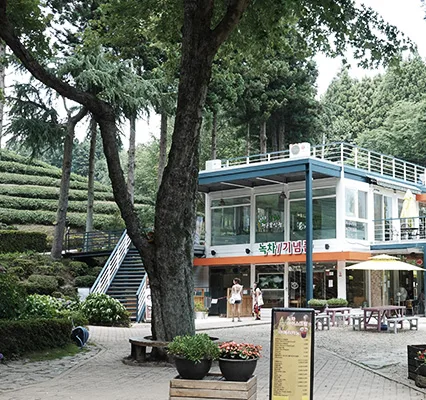
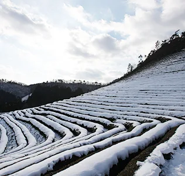
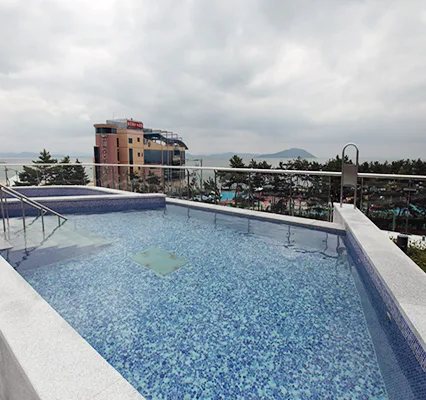

▲ 안개 낀 보성 녹차밭. 5~6월 새벽에 이런 풍경을 볼 확률이 높다 ⓒ 보성군 문화관광
1. 입장료 — 무료는 6세 미만뿐이다
대한다원 입장료는 성인·일반 4,000원입니다. 초·중·고 학생은 3,000원(단체 2,500원), 지역주민과 장애우는 2,000원, 65세 이상 경로는 3,000원입니다.
| 구분 | 요금 |
|---|---|
| 성인 · 일반 | 4,000원 |
| 초 · 중 · 고 학생 | 3,000원 (단체 2,500원) |
| 경로우대(65세 이상) | 3,000원 |
| 성인단체(20인 이상) | 3,000원 |
| 지역주민 · 장애우 | 2,000원 |
| 국가유공자 · 어린이(6세 미만) | 무료 |
여기서 헷갈리는 지점이 있습니다. '어린이'는 만 6세 미만만 무료이고, 초등학생부터는 학생 요금 3,000원이 적용됩니다. 유치원생 이하만 무료라고 기억해 두는 편이 낫습니다.
2. 코스는 5개, 가장 짧은 코스는 40분
관람 코스는 5개로 나뉘어 있습니다. 가장 짧은 3코스는 약 40분이면 돌아볼 수 있고, 전체를 다 보려면 그보다 훨씬 오래 걸립니다.
입구에서 매표소를 지나면 삼나무숲길이 이어지고, 그다음 산비탈 전체가 차밭입니다. 전망대까지는 도보로 15~20분 정도입니다.

▲ 대한다원 삼나무숲길. 매표소를 지나면 이 길을 따라 차밭 입구까지 이어진다 ⓒ 보성군 문화관광
3. 계절마다 표정이 다르다
보성 녹차밭은 계절에 따라 완전히 다른 풍경이 됩니다. 5~6월 새벽에는 안개가 차밭 능선에 깔려 곡선이 흐릿하게 겹쳐 보이고, 가을에는 단풍과 초록 이랑이 대비를 이룹니다. 겨울에는 눈이 쌓인 이랑이 또 다른 풍경을 만듭니다.

▲ 겨울 녹차밭. 눈이 쌓여도 이랑의 곡선은 그대로 드러난다 ⓒ 보성군 문화관광
4. 율포해수녹차센터 — 바다를 데운 온천
대한다원에서 가까운 율포에는 해수녹차센터가 있습니다. 바닷물을 끌어와 데운 해수 온천 시설로, 녹차밭 관람 뒤 몸을 풀기 좋은 코스로 묶입니다.
옥상 야외탕에서는 바다를 바라보며 물에 몸을 담글 수 있습니다. 실내에도 별도 시설이 있어 날씨에 관계없이 이용할 수 있습니다.

▲ 율포해수녹차센터 옥상 야외탕. 물에 몸을 담근 채로 바다를 볼 수 있다 ⓒ 보성군 문화관광
5. 자차 여행자를 위한 정리
첫째, '어린이 무료'는 6세 미만까지입니다. 초등학생 자녀와 함께라면 인원수만큼 학생 요금을 계산해 두십시오.
둘째, 시간이 없다면 3코스만으로도 충분합니다. 40분이면 핵심 풍경은 다 볼 수 있습니다.
셋째, 안개 낀 사진을 원한다면 5~6월 새벽에 맞춰 도착하십시오. 낮 시간대와는 전혀 다른 풍경이 나옵니다.
넷째, 녹차밭 관람 뒤 율포해수녹차센터로 동선을 이으면 하루 코스가 자연스럽게 마무리됩니다.
정리하면 이렇습니다. 보성 녹차밭은 입장료 자체가 부담스러운 곳은 아닙니다. 다만 '어린이'와 '학생'의 경계를 미리 확인해 두지 않으면 매표소에서 계산이 어긋납니다.